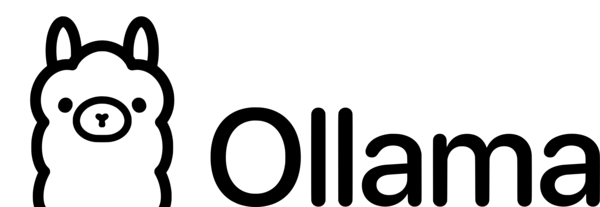
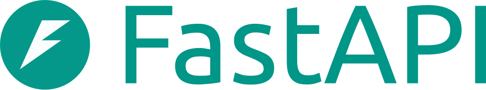

Un asistente inteligente local para el centro
Este TFG busca responder preguntas sobre el instituto usando información real del propio centro, de forma privada, local y fácil de mantener.
La demo es una demostración preparada para esta charla. La idea más ambiciosa del proyecto sigue existiendo, pero para la exposición enseñaremos la variante más segura y demostrable.
Qué problema resuelve
Muchas preguntas del centro se repiten: horarios, contacto, procesos, información básica… La idea es que el sistema encuentre la respuesta en la documentación interna y la devuelva de forma clara.
Idea principal
El usuario pregunta, el sistema busca información relevante y luego genera una respuesta en lenguaje natural.
RAG, n8n y Qdrant
RAG significa Retrieval-Augmented Generation, es decir, generación aumentada con recuperación. Primero se busca información útil y después se genera la respuesta con ese contexto.
n8n es la herramienta que conecta pasos y servicios. Qdrant es la base vectorial donde se guarda el conocimiento para poder buscar por significado.
Stack es el conjunto de tecnologías que forman la solución completa.
Tecnologías usadas
 Qdrant
Qdrant

Ollama
FastAPIAnalogía rápida
Imaginemos una biblioteca:
- n8n sería el bibliotecario que coordina todo.
- Qdrant sería el archivo donde están los libros organizados por significado.
- RAG sería la forma de buscar primero el libro correcto y luego contestar con su contenido.
Otros conceptos, como webhook, Vector Store, retriever... se explicarán en detalle durante la demostración en vivo.
Flujo actual de la demo
En esta versión, n8n recibe la petición, la envía al backend (desarrollado en FastAPI) y devuelve el resultado. FastAPI hace el trabajo de consulta y generación, mientras Qdrant aporta el contexto relevante y Ollama redacta la respuesta final.
⬆ Durante esta sección se mostrará la pantalla de n8n en directo y la imagen del flujo estático en grande.
Qué enseñaré en vivo
Escribiré una pregunta de ejemplo.
n8n capturará la consulta por webhook.
Qdrant devolverá fragmentos relevantes.
El sistema mostrará la respuesta final generada con el contexto recuperado.
Del workflow complejo al estable
La primera idea era hacer todo dentro de n8n con un agente y varias herramientas IA. Eso era más ambicioso, pero también más frágil y difícil de controlar para la demo.
Por eso ahora se muestra una versión simple y estable, que es la que mejor permite explicar el proyecto sin errores ni dependencias innecesarias.
Qué significa este cambio
- No es un retroceso, sino una decisión práctica para enseñar el proyecto bien a día de hoy.
- La versión compleja queda como evolución posible y como entrega final del proyecto.
- La solución estable permite centrarse en lo importante: el flujo, la idea y el valor real.
Perspectivas futuras
Más adelante se volverá a la idea del workflow más complejo y se podría además añadir memoria persistente, recoger feedback de usuarios y conseguir un comportamiento más inteligente del asistente.
También podría incorporarse una capa de aprendizaje operativo, donde el sistema recuerde qué respuestas fueron útiles y cuáles no.
El factor clave: inversión tecnológica
A día de hoy, la inversión de la Junta de Castilla y León en tecnología ha sido mínima (exceptuando los ordenadores). Esto condiciona qué se puede hacer con los recursos actuales.
Con una inversión en modelos de IA de pago o en servidores más potentes, el sistema podría dar respuestas mucho mejores, más rápidas y con mayor capacidad de razonamiento.
Qué sí y qué no
Hoy se enseña una solución funcional con los medios disponibles.
El futuro deja abierta la puerta a:
- feedback de usuario,
- memoria persistente,
- modelos de IA de mayor calidad (de pago),
- más herramientas IA integradas,
- volver al enfoque de agente autónomo.
Resumen final
El proyecto ya demuestra la idea principal: responder consultas sobre el centro con ayuda de información real y una arquitectura local. La demo explica bien ese valor y deja claro por dónde puede crecer después.
VenancIA combina automatización, búsqueda semántica y generación de texto para responder de forma útil sobre la información del centro.